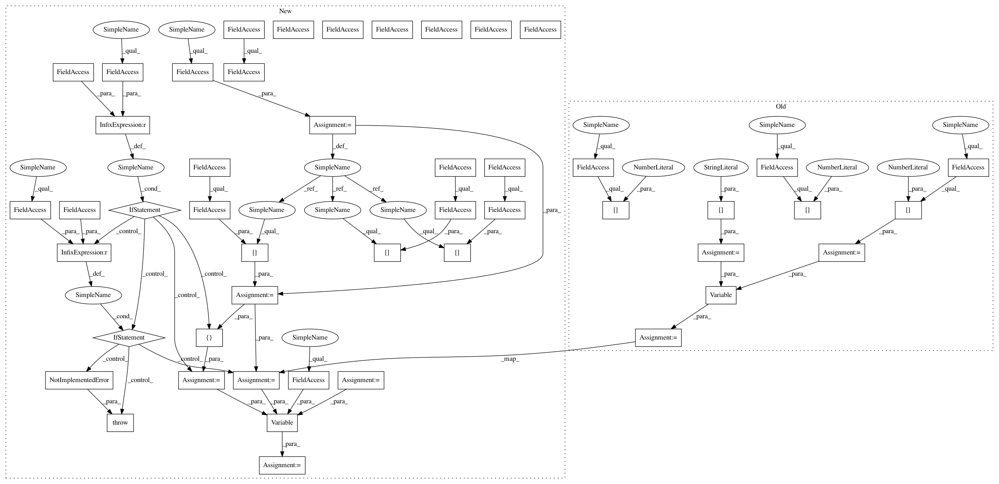

ce21b4ee85ad492be118639e7f9b45c611349ecb,src/graph_builder/graph/operators/max_pooling_2d.py,MaxPooling2D,__call__,#MaxPooling2D#Any#,30
Before Change
super().__init__(name, parameters)
def __call__(self, x: Variable):
N = x.shape[0]
H2 = (x.shape[1] + 2 * self.parameters["padding"][0] - self.parameters["ksize"][0]) / self.parameters["stride"][0] + 1
W2 = (x.shape[2] + 2 * self.parameters["padding"][1] - self.parameters["ksize"][1]) / self.parameters["stride"][1] + 1
C2 = self.parameters["out_size"]
y = Variable([N, H2, W2, C2])
self.append_input("x", x)
self.append_output("y", y)
return y,
After Change
super().__init__(name, parameters)
def __call__(self, x: Variable):
x_shape_dict = x.shape_dict
N = x_shape_dict[A.Axis.N]
H2 = (x_shape_dict[A.Axis.H] + 2 * self.parameters["padding"][0] - self.parameters["ksize"][0]) // self.parameters["stride"][0] + 1
W2 = (x_shape_dict[A.Axis.W] + 2 * self.parameters["padding"][1] - self.parameters["ksize"][1]) // self.parameters["stride"][1] + 1
C2 = x_shape_dict[A.Axis.C]
if x.axis_order == VA.OrderNCHW:
var_shape = [N, C2, H2, W2]
elif x.axis_order == VA.OrderNHWC:
var_shape = [N, H2, W2, C2]
else:
raise NotImplementedError()
y = Variable(var_shape, x.axis_order)
self.append_input("x", x)
self.append_output("y", y)
return y,
In pattern: SUPERPATTERN
Frequency: 3
Non-data size: 48
Instances
Project Name: mil-tokyo/webdnn
Commit Name: ce21b4ee85ad492be118639e7f9b45c611349ecb
Time: 2017-04-19
Author: hidaka@mi.t.u-tokyo.ac.jp
File Name: src/graph_builder/graph/operators/max_pooling_2d.py
Class Name: MaxPooling2D
Method Name: __call__
Project Name: mil-tokyo/webdnn
Commit Name: ce21b4ee85ad492be118639e7f9b45c611349ecb
Time: 2017-04-19
Author: hidaka@mi.t.u-tokyo.ac.jp
File Name: src/graph_builder/graph/operators/deconvolution2d.py
Class Name: Deconvolution2D
Method Name: __call__
Project Name: mil-tokyo/webdnn
Commit Name: ce21b4ee85ad492be118639e7f9b45c611349ecb
Time: 2017-04-19
Author: hidaka@mi.t.u-tokyo.ac.jp
File Name: src/graph_builder/graph/operators/average_pooling_2d.py
Class Name: AveragePooling2D
Method Name: __call__
Project Name: mil-tokyo/webdnn
Commit Name: ce21b4ee85ad492be118639e7f9b45c611349ecb
Time: 2017-04-19
Author: hidaka@mi.t.u-tokyo.ac.jp
File Name: src/graph_builder/graph/operators/max_pooling_2d.py
Class Name: MaxPooling2D
Method Name: __call__